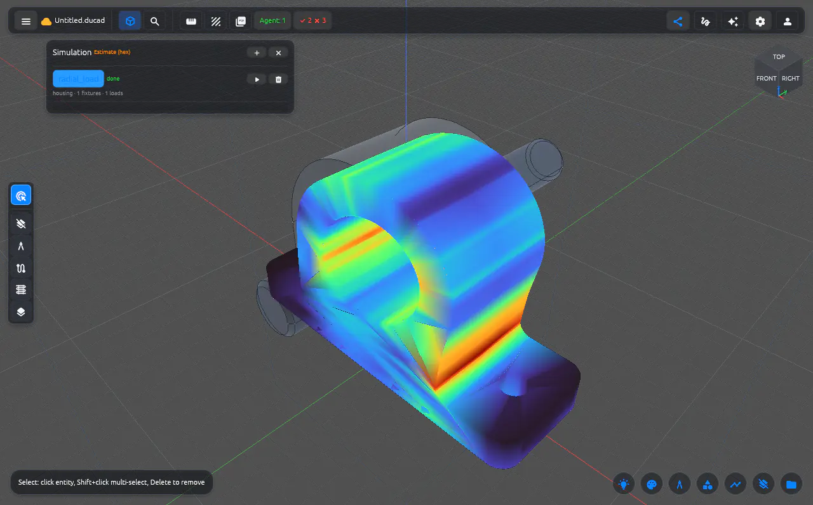
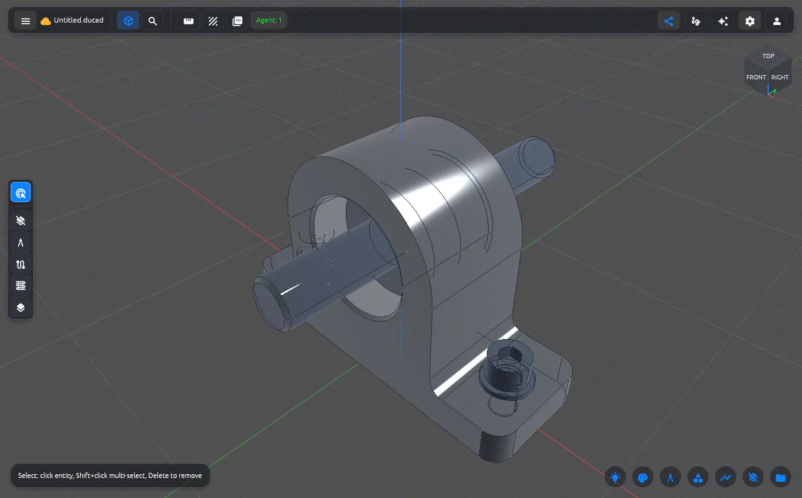
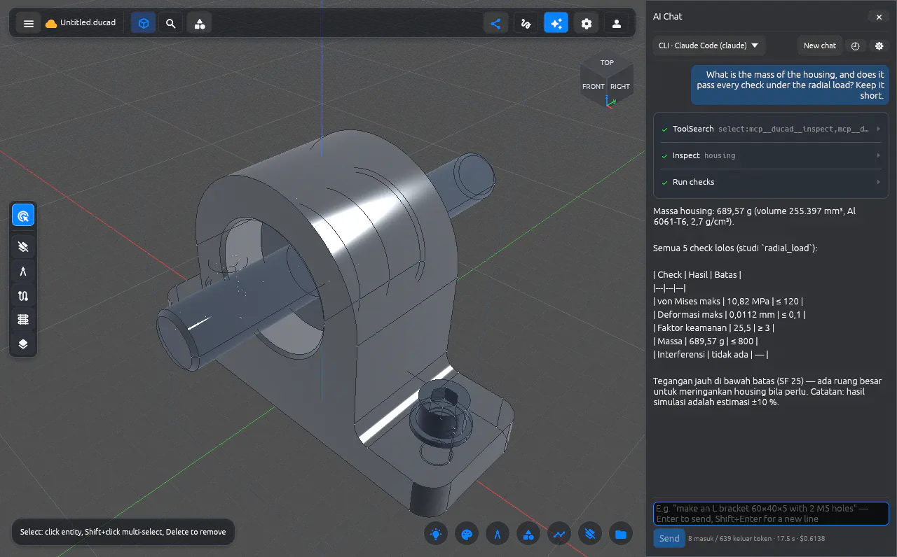
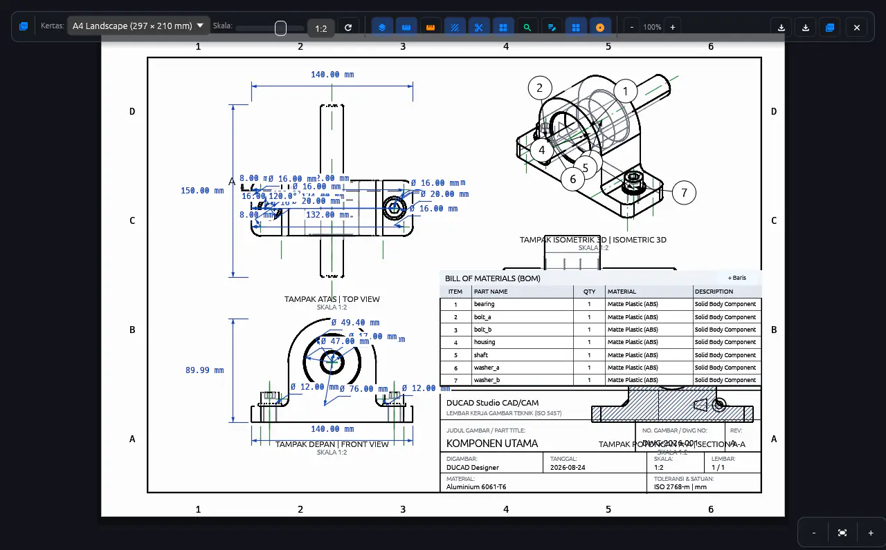

Sheet metalNew
Base flange, edge flange, hem and jog with bend radius and k-factor. Unfold to a flat pattern and export DXF with bend lines on their own layers.
New in 0.2 — simulation, sheet metal and an in-app AI agent
DuCAD is parametric 2D/3D CAD on the industrial OpenCASCADE B-rep kernel, written in Rust. Model a part, run a stress study on it, release the ISO drawing — or hand the whole job to an AI agent and watch it work in your viewport.

Every screenshot on this page is the running app. The part was modeled by an agent through DuCAD's own live bridge — 36 replayable operations.
One workflow
Geometry, analysis, documentation and automation share one document — so a changed dimension flows through all of them.
Not a polygon mesh: exact surfaces from the OpenCASCADE kernel. Every dimension can be a named parameter, so one edit regenerates the whole part.

A finite-element solver ships inside the app. Fix a face, apply a load, press run — the stress field paints straight onto your model.
Results are engineering estimates (about ±10 % on the default mesh), not certification numbers.
Open the AI Chat sidebar and ask in plain language. The agent uses the same tools you do — it inspects geometry, runs checks and edits the model in front of you.

One click turns the solid into an ISO sheet: projected views, a section, dimensions, a bill of materials and numbered balloons.

Everything included
Base flange, edge flange, hem and jog with bend radius and k-factor. Unfold to a flat pattern and export DXF with bend lines on their own layers.
Variants of one design: parameter overrides, suppressed features, material swaps, CSV design tables.
ISO 286 fits, GD&T symbols on the sheet, worst-case or RSS stack-up.
ISO 4762 and 4014 bolts, nuts, washers, pins and ball bearings, listed in the BOM by standard.
Requirements written as data — mass, wall thickness, clearance, peak stress — re-evaluated after every change.
Draw Bézier paths with fills and layers, or sketch freehand with Apple Pencil — strokes are recognized as lines, arcs and circles, constrained, and extruded straight to 3D in their own colors.
Lines, arcs, ellipses, polygons, slots, splines and text, held by a geometric and dimensional constraint solver with tiered snapping.
Mates, interference checks, gear, screw and rack couplings, sequenced exploded views.
A searchable feature tree. Edit an early step and everything downstream regenerates.
STEP in and out. Export STL, OBJ, GLB, SVG, PDF and DXF. The native .ducad file is plain JSON.
Design as code
Every modeling step is a JSON operation in a replayable log. That makes a part something you can diff, review, test in CI and hand to an agent.
--attach the agent drives the open app, where you watch each step.{ "params": { "len": 140, "t": 14, "r_bore": 23.5 },
"ops": [
{"op":"primitive","id":"base",
"shape":{"box":{"size":["$len",48,"$t"]}}},
{"op":"hole","id":"mount_holes","body":"base",
"face":">Z","spec":{"iso":"M10"}},
{"op":"fillet","id":"neck_blend","body":"housing",
"edges":"|Y[z=14][x=38]","radius":6},
{"op":"standard_part","id":"bearing",
"standard":"bearing","size":"6204"},
{"op":"study","id":"radial_load","kind":"static", …}
] }$ ducad-cli build pillow_block.ops.json --out dist
ok checks 5 passed · 0 failed
ok radial_load 10.82 MPa · safety factor 25.5
ok vibration first mode 4728 Hz
→ dist/pillow_block.step · report.mdExcerpt of the model shown above; terminal output condensed from the build report.
Why DuCAD
OpenCASCADE is a mature open-source B-rep kernel. No kernel license, no seat fee.
Designs are JSON and STEP. Nothing is locked in a proprietary container.
Your geometry stays on your device. Network AI and the agent bridge are off until you turn them on.
Rust from the sketch solver to the renderer, released under AGPL-3.0.
16 Rust crates, one direction of dependency
ducad-coreducad-sketchducad-kernelducad-inkducad-ioducad-simducad-engineducad-cliducad-mcpducad-chatducad-assistducad-renderducad-uiducad-i18nducad-cloudducad-app
Get Started
rustupThe first build compiles OpenCASCADE (about 8–15 minutes) and caches it in target/. Later builds are fast.
git clone --recurse-submodules https://github.com/cmjcode/ducad.git
cd ducad/ducad-editor
# Run the application
cargo run -p ducad-app
# Install the CLI and MCP server for agents
make install-agent-tools